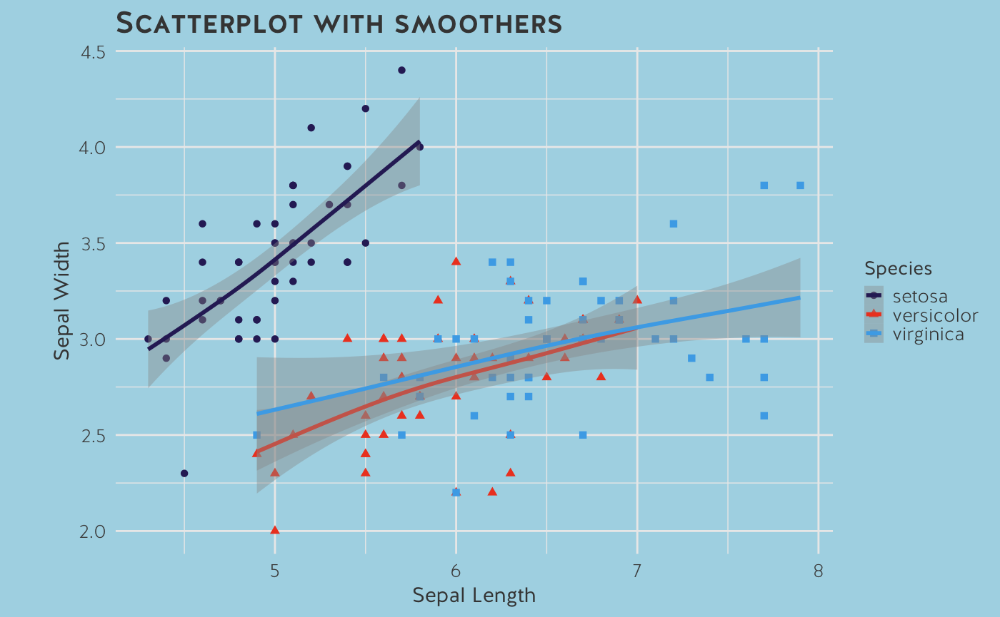

Setting the background colour of a ussc ggplot2 graph
All ussc themes have a transparent background which means that you can set the background colour of a graph by using developer arguments. To do this, append a CSS style sheet in the R Markdown YAML (which affects the entire HTML document) or write {r dev.args = list(bg = 'colour')} for a specific graph, replacing colour with a HEX code or rgb code. Note that if you do not set a background colour, theme_ussc() and other variations in the ussc package will default to a white background.
Example 1
{r fig.align='center', dev.args=list(bg='#2a2a2b')}
ggplot(iris, aes(Sepal.Width, Sepal.Length, colour = Species)) +
geom_point(size = 4, alpha=0.4) +
theme_ussc_dark() +
labs(title="Univers Header",
x="Univers Font: Sepal Width",
y="Univers Font: Sepal Length",
caption = "The data is from the Iris R package and is an example.") +
scale_colour_ussc("blue", reverse=TRUE)
Example 2
{r GAM, fig.align='center', dev.args=list(bg='lightblue')}
ggplot(data=iris, aes(x=Sepal.Length, y=Sepal.Width, color=Species)) +
geom_point(aes(shape=Species), size=1.5) +
xlab("Sepal Length") +
ylab("Sepal Width") +
ggtitle("Scatterplot with smoothers") +
scale_colour_ussc("main") +
theme_ussc() +
geom_smooth(method="gam", formula= y~s(x, bs="cs"))